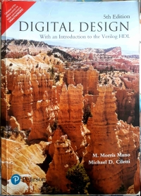
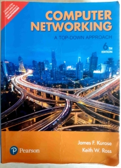
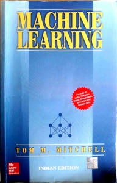

My Undergraduate Reference Books
First Published: 28/04/21
As I am about to complete my undergraduate studies (in Computer Engineering - 2017 to 2021), I have decided to dedicate this blogpost to list down all the reference books/lecture notes I have used in the past 4 years. In the future, if I further recall any important references, I will surely update this blog post. This list will be particularly helpful to students enrolled in Mumbai University. Unless otherwise mentioned, do assume that the books were purchased from amazon.in.
For most of the core subjects in Computer Engineering, I do not recommend reading guides. They are often plagiarized, filled with grammatical and conceptual errors, and contain low-quality images. If you have recently started your undergraduate studies, I highly recommend reading Teach Yourself Programming in Ten Years.
A list of computer science reference materials that are freely available is compiled by Prof. Colin Gordon. (Hacker News discussion)
Although I never took GATE, the syllabus prescribed by the exam authorities and reference list mentioned by Ravi Shankar Mishra in 2015 were particularly influential.
The C Programming Language
Brian Kernighan and Dennis Ritchie
Discrete Mathematics and its Applications
Kenneth Rosen
In Addition: Lecture notes by L. Lovasz and K. Vesztergombi (Yale University, Spring 1999), and by Eric Lehman, Tom Leighton, and Albert Meyer (MIT, 2010) are helpful.
Introduction to Algorithms
Thomas Cormen, Charles Leiserson, Ronald Rivest, and Clifford Stein
In Addition: Competitive Programmer’s Handbook by Antti Laaksonen (Draft July 3, 2018) is helpful. For a dive into advanced data structures, I recommend exploring Topics in Advanced Data Structures (Stanford CS166 - Spring 2019, relevant Hacker News discussion).
Digital Design
Morris Mano and Michael Ciletti
In Addition: For a quick summary, I recommend reading Discrete Mathematics and its Applications by Kenneth Rosen (Chapter 10 - Boolean Algebra).
Computer Organization
Carl Hamacher, Zvonko Vranesic, and Safwat Zaky
An interesting quote from the book: Two things that can wreck a good CPU run are interrupts and page faults.
In Addition: Prof. V Kamakoti's lectures on Computer Organization and Architecture (IIT Madras) are very intuitive.
Operating System Principles
Avi Silberschatz, Peter Galvin, and Greg Gagne
In Addition: Operating Systems: Three Easy Pieces by Remzi Arpaci-Dusseau and Andrea Arpaci-Dusseau is a good substitute. While I have yet to go through Think OS: A Brief Introduction to Operating Systems by Allen Downey, do check it out.
Computer Networking: A Top-Down Approach
James Kurose and Keith Ross
In my opinion: Many computer networking courses (taught to Computer Engineering students) in India start with the physical layer and move upwards to the data link layer. While following this approach, the professors often skip the application layer due to time constraints. As mentioned in this book's title, it takes a reverse approach - starting with the application layer and skipping the physical layer. I strongly believe that the book's top-down approach is the best way to teach a computer networking class. Moreover, the diagrams presented in this book are highly intuitive.
In Addition: Lecture Notes by Prof. Dheeraj Sanghi (IIT Kanpur - CS425) are a great resource.
An Introduction to Formal Languages and Automata
Peter Linz
In Addition: Feynman Lectures on Computation (Chapter 3 - The Theory of Computation), and Models of Computation by Jeff Erickson are helpful.
Artificial Intelligence: A Modern Approach
Stuart Russell and Peter Norvig

Machine Learning
Tom Mitchell
Alternative: I recommend referring to Andrew Ng's weekly lecture notes from Coursera and Deep Learning by Ian Goodfellow, Yoshua Bengio, and Aaron Courville. Moreover, r/machinelearning has a curated list of advanced courses in machine learning.
Database System Concepts
Abraham Silberschatz, Henry Korth, and S. Sudarshan
Speech and Language Processing
Dan Jurafsky and James Martin
In Addition: Slides and suggested readings from Stanford CS224N by Christopher Manning, slides and reference material from CMU CS 11-747 by Graham Neubig (Spring 2020), and Jacob Eisenstein's Natural Language Processing (2018 draft) are helpful. For non-neural NLP models, Natural Language Processing with Python by Steven Bird, Ewan Klein, and Edward Loper is a great resource.
Mining of Massive Datasets
Jure Leskovec, Anand Rajaraman, and Jeff Ullman
In Addition: The authors taught an online course complementing the topics mentioned in this book.
Missing Semester
Anish Athalye, Jon Gjengset, and Jose Ortiz
This is not a reference book, however, taking this course will help you understand topics such as shell scripting, version control, debugging, profiling, etc.
←